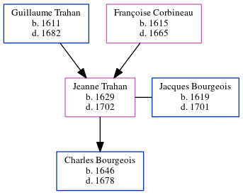

Jeanne Bourgeois (née Trahan) 1629 - 1702
[ Home ] | [ Calendar ] | [ Surnames Index ] | [ Census Index ] | [ Family History ]The child of Guillaume Trahan and Françoise Corbineau, Jeanne Trahan, the 10 times great-grandmother of Michele Copp (née Phillips), was born in St Germain, Indre-et-Loire, Centre, France in 16291,2 and married Jacques Bourgeois (a surgeon and founding pioneer with whom she had 1 child, Charles) in Port Royal, Acadia, Nova Scotia, Canada in 1643.
She died in 1702 in Port Royal, , New Brunswick, Canada.
Parents
- Guillaume was born in 1611
- Françoise was born in 1615
Children
- Charles was born in 1646
Citations
- Family Data Collection - Births Online publication - Provo, UT, USA: The Generations Network, Inc., 2001.
- U.S. and International Marriage Records, 1560-1900 Online publication - Provo, UT, USA: The Generations Network, Inc., 2004.Original data - This unique collection of records was extracted from a variety of sources including family group sheets and electronic databases. Originally, the information was deriv
Family Tree
Generated by ged2site. Last updated on Jun 6, 2024